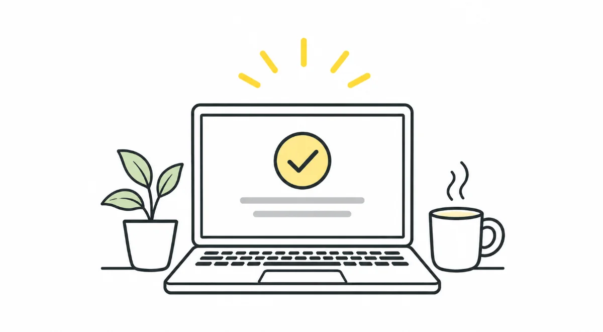

HeuristicsH1Visibility of System Status
A good product works. A great product talks
Keep users informed. Always. Even silence is a message, and usually the wrong one.

As I mentioned in my first article, I'll be writing about Jakob Nielsen's 10 general principles for interaction design. These principles are called heuristics because they serve as broad rules of thumb rather than strict usability guidelines.
Just like my previous article, I'll use real-life examples to explain these principles and show how we can apply the same thinking to digital products.
After all, as I said earlier, UX is about more than screens.
So, let's begin with the first heuristic.
Heuristic #1: Visibility of System Status
A design should always keep users informed about what's going on, through appropriate feedback and within a reasonable amount of time.
What is Visibility of System Status?
Let's understand this in simple words.
Whenever we perform an action, we expect some kind of response from the system.
For example, when you click a button, you expect something to happen. When you upload a file, you expect to know whether it's uploading or completed.
Imagine clicking a button and getting absolutely no response. What would you think?
Is it working? Did I click it correctly? Should I try again?
That's exactly what this heuristic is about.
Visibility of System Status means keeping users informed about what's happening, through clear and timely feedback.
The idea is simple: when users perform an action, they should be able to see its result or understand what's happening next.
Without this feedback, users are left confused, uncertain and sometimes even anxious.
After all, there's one basic question every user wants answered:
"Is this thing working or not?"
Visibility is all around us
If we pay a little attention, we'll notice that almost every product around us communicates its status in some way.
Think about these everyday examples:
- A wall clock: The movement of its hands tells us that it's working. The moment they stop, we know something is wrong, probably a dead battery.
- DTH television services: A few days before our subscription expires, we start receiving reminders on our TV screens. These messages give us time to renew before the service gets interrupted.
- Metro stations: Real-time arrival boards tell us when the next train is expected. We don't have to keep guessing or wondering how long we'll have to wait.
- Our phones: Battery level, signal strength, Wi-Fi connectivity and charging status are all communicated through simple icons.
These might look like small things, but they make a big difference.
They tell us what's happening without making us ask.
And that's the whole point of this heuristic.
A simple moment at my desk
Even while writing this article, I'm experiencing this heuristic in action.
When I press the 'A' key on my keyboard, I immediately see the letter 'A' appear on my screen.
Simple, right?
Now, imagine a system where you type an entire sentence, but nothing appears on the screen until you press Enter.
Think about what would happen.
- You wouldn't know whether your keyboard was working.
- You wouldn't be able to notice typing mistakes as you go.
- You would lose the natural flow of typing.
It would be frustrating, even though the system might technically be working perfectly.
This is why timely feedback matters. Even something as simple as showing a letter on the screen immediately after pressing a key makes the experience feel natural.
When it fails: My medical insurance experience
Let me share a recent experience where this heuristic was completely missing.
I was renewing my medical insurance online. I completed all the steps, including the payment.
After making the payment, I was redirected to a page where I was supposed to receive my updated policy document.
But instead of a confirmation, I saw... nothing.
- No loading indicator.
- No success message.
- No download button.
- Not even an error message.
Naturally, I started wondering:
- Did my payment go through?
- Should I try again?
- Did something go wrong with the system?
I wasn't sure what had happened.
So, to be on the safer side, I checked my bank statement. The amount had been debited.
I then called my insurance agent and shared the transaction screenshot.
I had to wait for more than 30 minutes before he confirmed that the payment had gone through.
And guess what? I finally received my updated policy two days later.
Now, think about it.
All that confusion, uncertainty and unnecessary effort could have been avoided with just one simple message:
"Payment successful. We're processing your policy. You will receive it shortly."
That's all I needed.
The system didn't necessarily have to generate my policy document immediately. It just had to tell me what was happening.
And that's where the experience failed.
Why does this matter?
This isn't just about making a product look good or adding a few loading animations.
It's about building trust.
Think about situations involving:
- Financial transactions
- Healthcare services
- Travel bookings
- Government services
In all these situations, users need to know whether their actions have been received and what is happening next.
Imagine making a payment and not knowing whether it was successful. Or booking a flight without receiving any confirmation.
Would you feel comfortable using that service again?
A lack of feedback can lead to confusion, repeated actions and unnecessary support queries. Eventually, it affects both the user's experience and the business.
Sometimes, a simple message or a small indicator can save users a lot of time and stress.
A concluding thought
For me, Visibility of System Status isn't just a UX best practice. It's also a way of respecting the user.
Respecting their time, attention and trust.
Whether it's a blinking light, a progress bar, a success tick or a simple "Thank you", good products always keep their users in the loop.
Because, in the end:
A good product doesn't just work. It communicates.
And if users are left in the dark, something in the experience is broken.